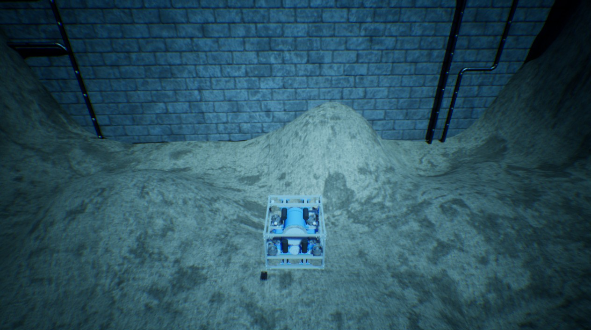

自定义场景配置
HoloOcean 的世界支持通过更换场景来进行配置（详见“场景”一节）。HoloOcean 软件包中包含了一些以 .json 文件形式提供的预置场景，同时也支持用户创建并使用自定义场景。
用户既可以通过 Python 脚本中的字典（dictionary）来定义场景，也可以直接创建 .json 文件。这两种方法均遵循相同的格式规范，具体请参阅场景文件格式一节。
使用字典进行场景配置
在 Python 中创建一个符合场景文件格式规范的字典，并将其传递给 holoocean.make() 函数。
示例

import holoocean
cfg = {
"name": "test_rgb_camera",
"world": "SimpleUnderwater",
"package_name": "Ocean",
"main_agent": "auv0",
"ticks_per_sec": 60,
"agents": [
{
"agent_name": "auv0",
"agent_type": "HoveringAUV",
"sensors": [
{
"sensor_type": "RGBCamera",
"socket": "CameraSocket",
"configuration": {
"CaptureWidth": 512,
"CaptureHeight": 512
}
}
],
"control_scheme": 0,
"location": [0, 0, -10]
}
]
}
with holoocean.make(scenario_cfg=cfg) as env:
for _ in range(200):
env.tick()
使用 .json 文件配置场景
您可以通过创建符合场景文件格式规范的 .json 文件来定义自定义场景，并采取以下任一方式：
1.将其放置在 HoloOcean 的场景搜索路径中
2.自行加载并将其解析为字典，然后按照使用字典配置场景中的说明使用该字典
HoloOcean 的场景搜索路径
当您向 holoocean.make() 传入场景名称时，HoloOcean 会遍历各个包文件夹（参见包安装位置），直到找到与该场景名称匹配的 .json 文件。
因此，您可以将自定义场景的 .json 文件放置在该文件夹中，HoloOcean 便会自动找到并使用它。
警告
如果您移除并重新安装某个包，HoloOcean 将清除该文件夹中的内容。